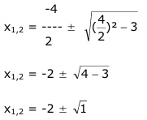

Aufgabe 97 In welchen Punkten schneiden sich die beiden Parabeln? y = -3,5x2 - 14x - 9 und y = 0,5x2 + 2x + 3 Gleichsetzverfahren: -3,5x2 - 14x - 9 = 0,5x2 + 2x + 3 |+3,5x2 - 14x - 9 = 4x2 + 2x + 3 | +14x - 9 = 4x2 + 16x + 3 | +9 4x2 + 16x + 12 = 0 |:4 x2 + 4x + 3 = 0 p, q – Formel : p = 4 , q = 3  x1,2 = -2 ± 1 x1 = -2 – 1 = -3 x2 = -2 + 1 = -1 y1 = 0,5 * (-3)² + 2 * (-3) + 3 = 1,5 y2 = 0,5 * (-1)² + 2 * (-1) + 3 = 1,5 P1(-3|1,5) , P2(-1|1,5)